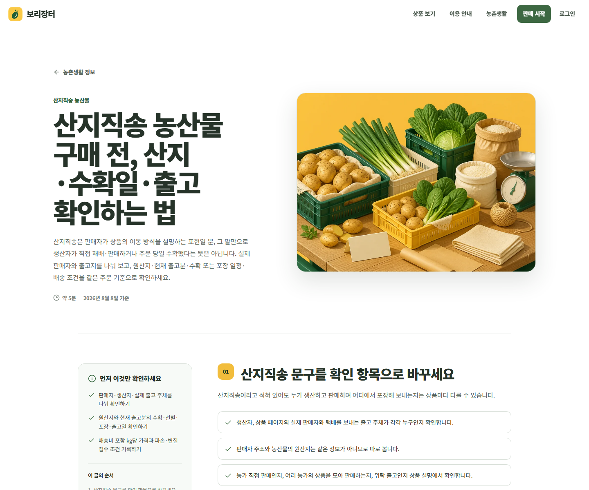

시세·경매·직거래·계절 품목을 하나의 긴 글에 섞지 않고 검색 목적별 안내로 분리했습니다.
Agriculture Marketplace
검색 질문을 계산과 거래 준비로 이어 붙인 농산업 플랫폼.
보리장터는 빈 매물 목록부터 보여주지 않습니다. 농산물 시세, 직거래, 산지직송과 농기계 거래처럼 사용자가 먼저 묻는 질문을 공개 가이드로 해결하고, kg당 가격·경매 예상 수취금 계산과 다음 안내로 이동하게 설계했습니다.

01 · ACQUISITION FLOW
읽을 이유, 계산할 이유, 다시 이동할 이유를 한 흐름으로 만듭니다.
배송비 포함 kg당 가격과 경매 비용을 입력해 비교할 수 있어 매물이 없어도 방문 가치가 남습니다.
검색·공유·보유 사이트 추천 경로를 나눠 저장해 실제 방문이 생긴 주제를 다음 개선의 근거로 씁니다.